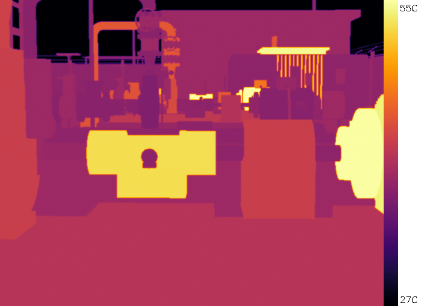
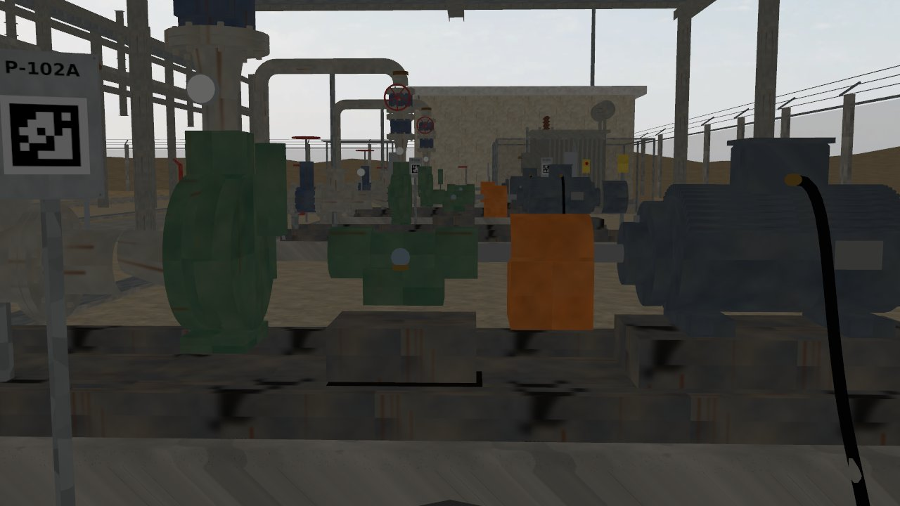
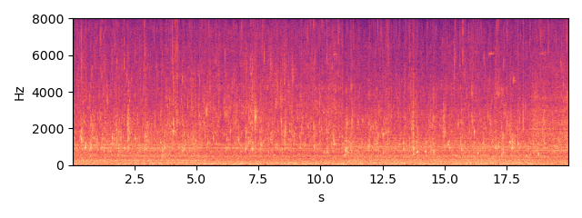
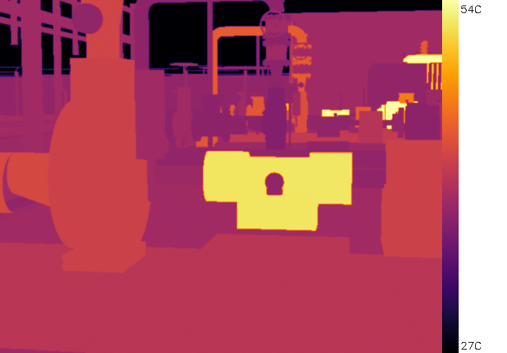
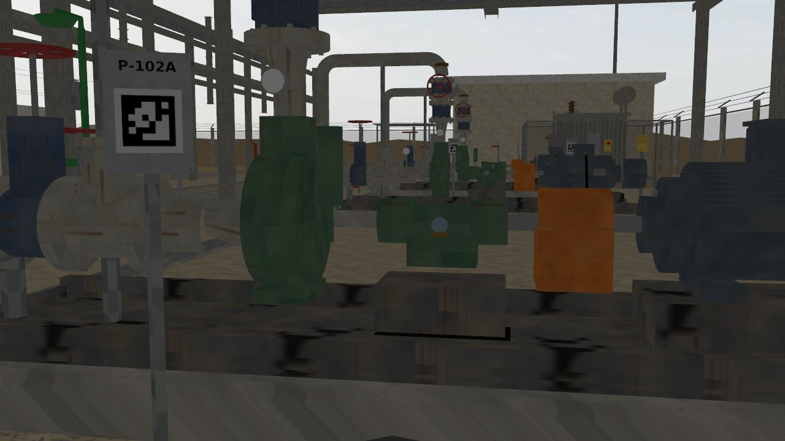
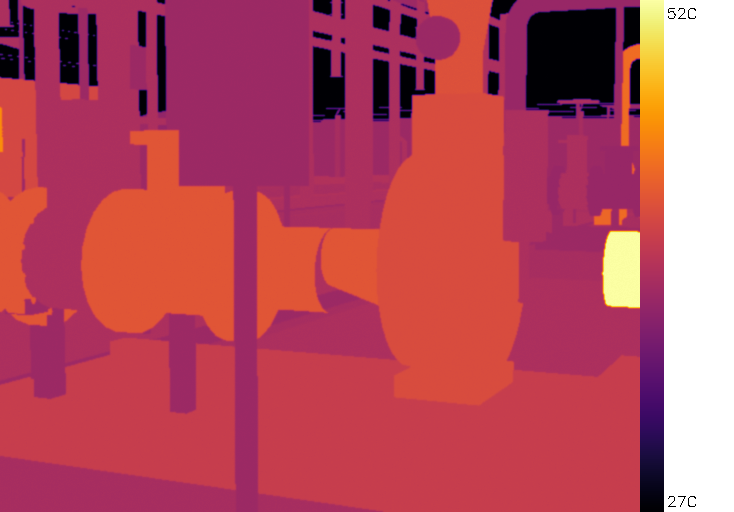
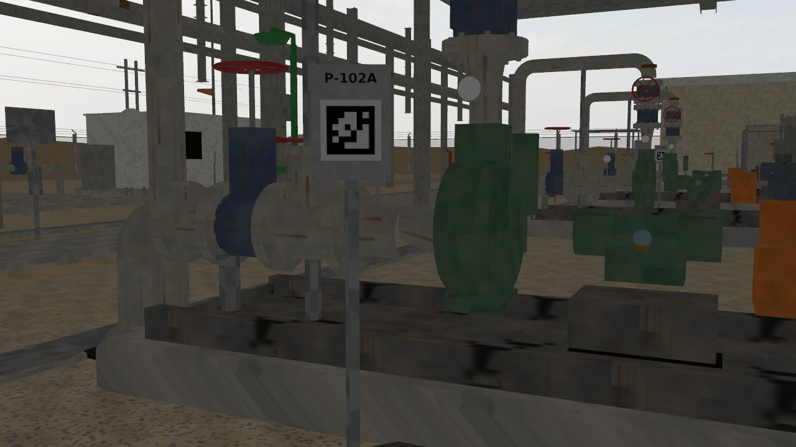
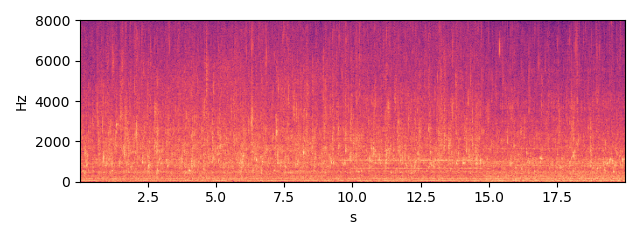

P-102A — OH2 overhung centrifugal pump
Status none HI 0.84 RUL 6.5 d [2.6-90.0] (band = 90 % interval)
Health indicator per inspection round; vertical lines = maintenance log entries; red band = RUL estimate.
Inspection snapshots (robot camera and microphone)

thermal, aim 3, max 56.7 C (Gazebo round 2026-10-03 16:41)

RGB, aim 3

sound, aim 3 (dwell window)

thermal, aim 4, max 56.8 C (Gazebo round 2026-10-03 16:41)

RGB, aim 4
sound, aim 4 (dwell window)

thermal, aim 5, max 52.5 C (Gazebo round 2026-10-03 16:41)

RGB, aim 5

sound, aim 5 (dwell window)
Alarm history
| time | level | fused score | HI | reasons | work order |
|---|
Maintenance log (CMMS view)
| date | type | details |
|---|---|---|
| 2026-10-06 | duty_swap | {"new_duty": "P-102B"} |
| 2026-10-09 | greasing | {"part": "pump_ie_brg"} |
| 2026-10-12 | duty_swap | {"new_duty": "P-102A"} |
| 2026-10-19 | duty_swap | {"new_duty": "P-102B"} |